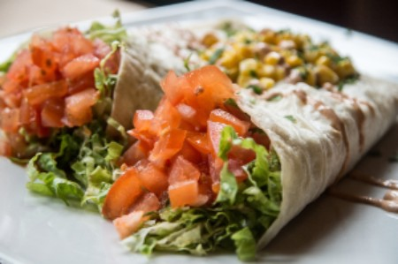

The Downtown Diner is located in the heart of Techieville! We specialize in good-ole home cooking. Our menu ranges from chicken dumplings to our famous fiesta burrito. Our breakfast menu is available all day. Please come by and share a meal with us. We are conveniently located on the corner of 5th and Hypertext Avenue.
